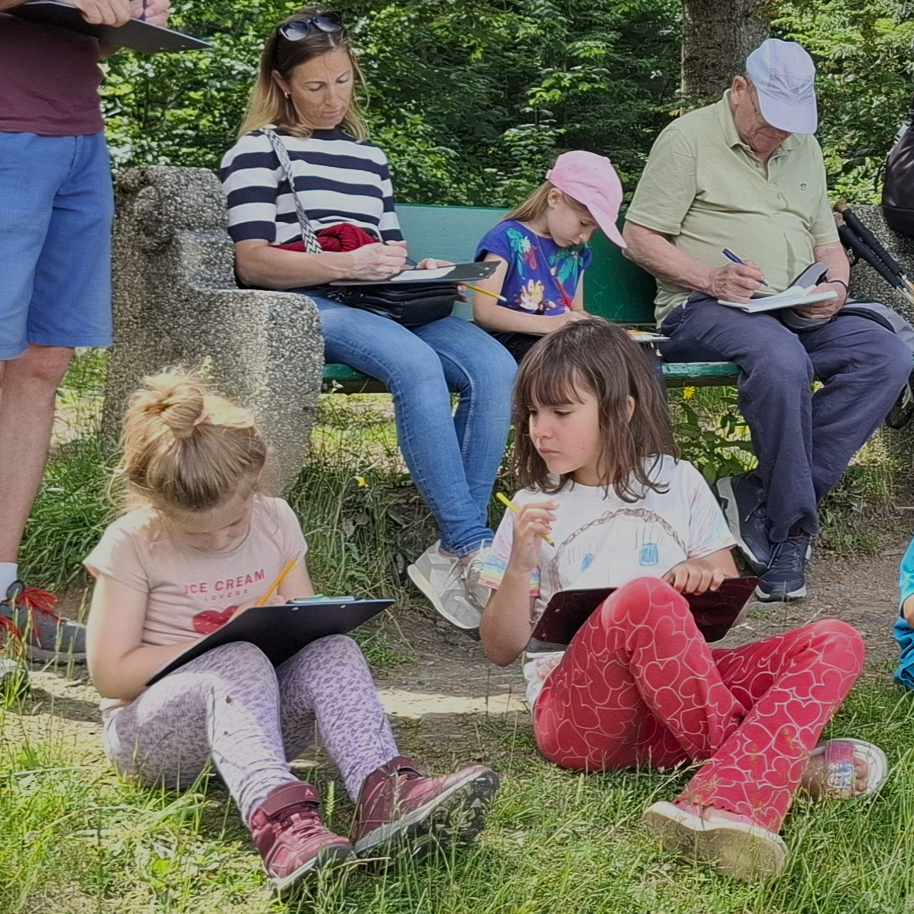
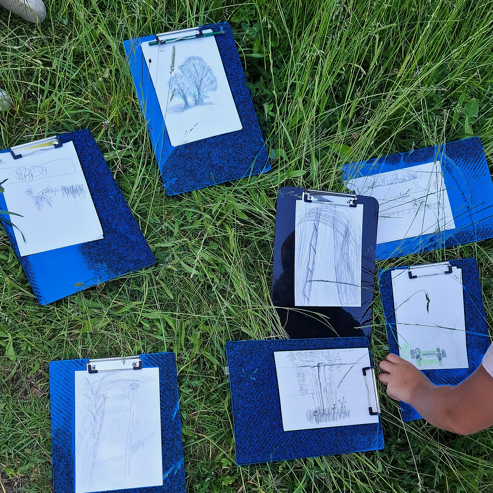
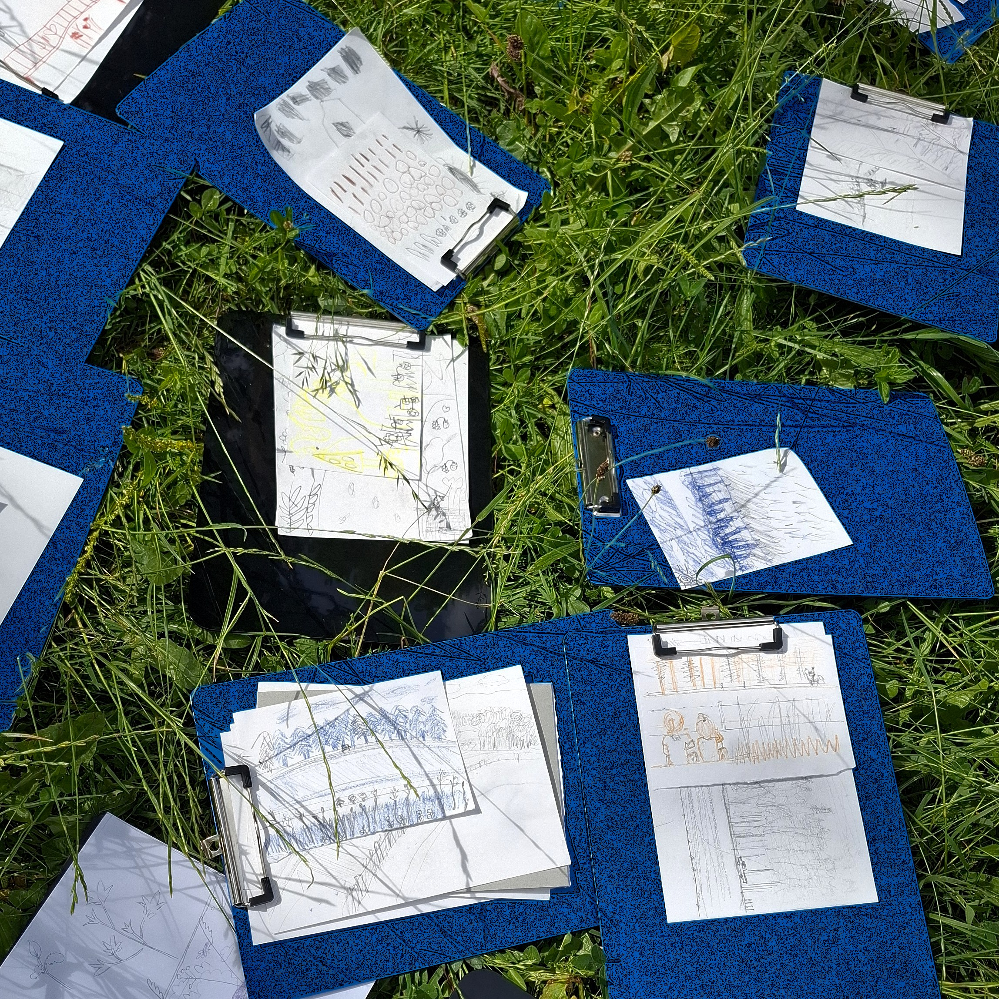
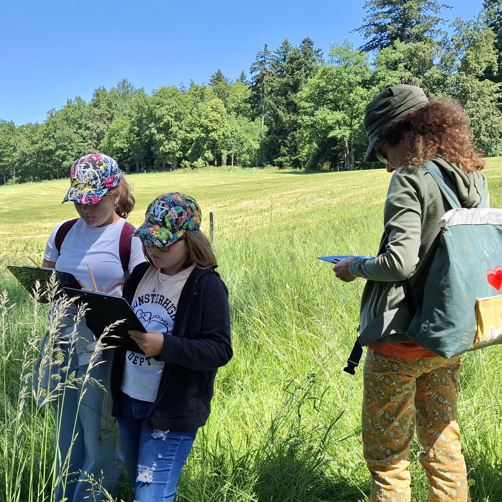
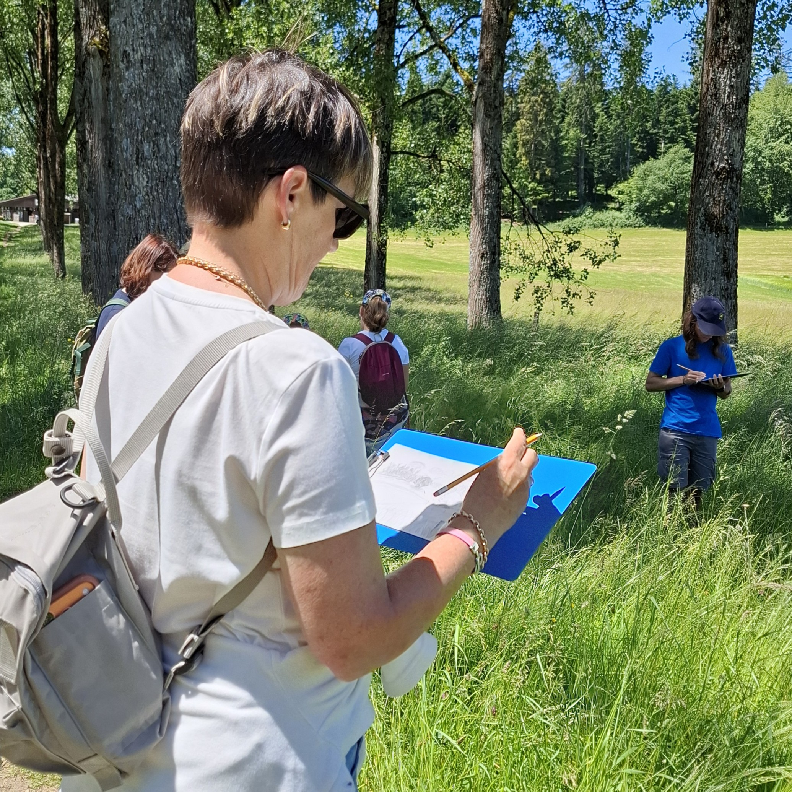
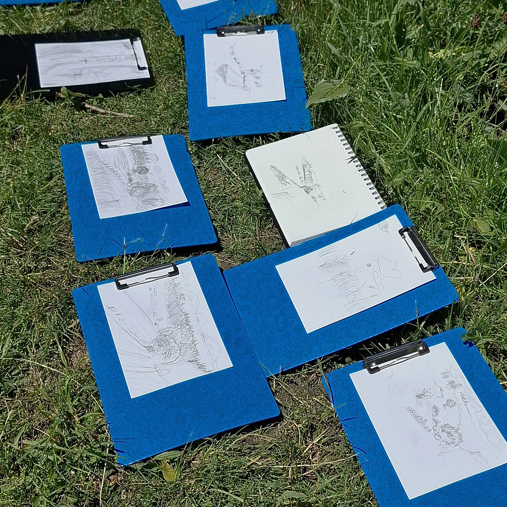

Samedi 6 juin, une superbe journée ensoleillée au Festi'Jorat. La place de fête était bien remplie et animée par un musicien inspiré 🎶
C'est dans ce cadre que j'ai pu animer 2 ateliers "Croquis en balade avec Montagn'Art"
2 groupes d’enfants et d’adultes, pleins de vie et d’enthousiasme, pour découvrir le paysage à travers le croquis au crayon ✏️. Le paysage était le thème du festival. Il y avait sur place divers ateliers pour le découvrir de différentes manières. Le dessin était une belle approche pour se rendre compte que chaque personne a sa perception. Nous avons beau avoir les mêmes montagnes, champs ou forêts devant nous, chacun les représente d’une manière différente.
Pleins de belles œuvres sont nées de cette petite balade de 1h, et tous sont repartis avec de beaux sourires 😄
Merci au Parc naturel du Jorat pour cette belle opportunité 😊





